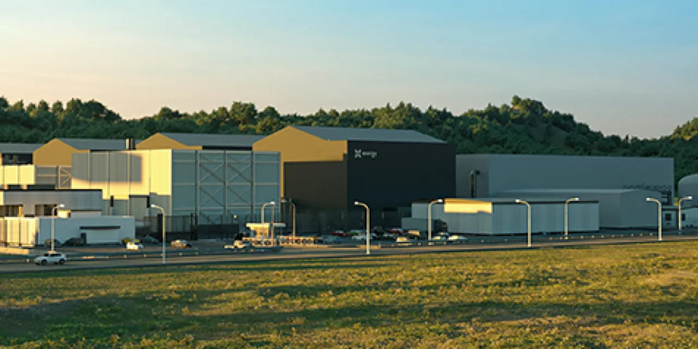

엑스에너지 XE를 볼 때 가장 먼저 고쳐야 할 질문은 “우라늄을 얼마나 팔 수 있나”가 아닙니다. XE는 이미 상장된 미국 원전 기술 회사이지만, 카메코처럼 우라늄을 캐는 광산주도 아니고, 센트러스처럼 농축 서비스를 직접 파는 순수 연료주도 아닙니다. 더 가까운 표현은 원자로 설계 IP와 TRISO-X 연료 가공 서비스를 함께 파는 장기 옵션 회사입니다. 그래서 우라늄 가격 차트만 보고 판단하면 핵심을 놓치기 쉽습니다.
공시 기준으로 X-Energy, Inc.는 2026년 4월 IPO를 마쳤고, 10-Q에서는 주당 23달러에 Class A 보통주를 발행해 약 11억 달러의 순조달액을 확보했다고 설명했습니다. 상장 티커는 XE입니다. 2026년 1분기 총 수익과 보조금 수익은 4,342만 달러였고, 영업손실은 6,611만 달러였습니다. 순손실은 1억 6,622만 달러였지만, 여기에는 워런트 부채 평가손실 같은 비현금성 항목이 크게 들어갑니다. 지금 단계의 XE는 흑자 원전 운영사가 아니라, 첫 상업 원전과 연료 공장으로 가기 위해 비용을 쓰는 상장 개발 기업입니다.
그래서 투자자가 봐야 할 핵심은 세 가지입니다. 첫째, Xe-100 설계가 실제 고객 프로젝트에서 허가를 받을 수 있는가입니다. 둘째, TRISO-X 연료 공장이 일정대로 완성될 수 있는가입니다. 셋째, 우라늄 원료를 직접 파는 것이 아니라 HALEU를 최종 TRISO-X 연료로 가공해 장기 재장전 매출을 만들 수 있는가입니다. 이 세 가지가 이어져야 XE의 스토리는 단순한 원전 테마가 아니라 반복 매출 모델로 바뀝니다.
Xe-100은 작은 원전이 아니라 산업용 열까지 노리는 설계입니다

Xe-100은 공시에서 원자로 1기당 80MWe 또는 200MWth 규모로 설명됩니다. 4기 구성으로 묶으면 320MWe 또는 800MWt 규모가 됩니다. 여기서 중요한 점은 전기만 파는 발전소가 아니라 산업용 열과 증기까지 겨냥한다는 것입니다. 화학 공장, 데이터센터, 전력 수요가 큰 산업 시설은 전기만 필요한 것이 아니라 안정적인 고온 열과 장시간 기저 전력이 필요합니다. X-energy가 Dow, Amazon, Centrica 같은 이름을 강조하는 이유도 여기에 있습니다.
Dow의 Seadrift 프로젝트는 산업용 열과 전력을 동시에 보여줄 수 있는 첫 상업 사례 후보입니다. Amazon과 Energy Northwest 쪽은 데이터센터 전력 수요와 맞물립니다. Centrica는 영국에서 다수 Xe-100 배치를 검토하는 장기 옵션입니다. 다만 여기서 “검토”, “옵션”, “권리”와 “확정 매출”을 구분해야 합니다. 원전은 발표에서 수익까지 시간이 매우 깁니다. X-energy도 첫 상업 원자로군의 목표 시점을 early 2030s로 설명합니다.
투자자가 이 설계를 좋게 볼 수 있는 이유는 모듈성, 산업용 열, 장기 서비스 매출 가능성입니다. 반대로 조심해야 할 이유는 FOAK, 즉 첫 상업 원전의 비용과 일정입니다. 기존 대형 원전보다 작고 모듈형이라는 말이 곧바로 싸고 빠르다는 뜻은 아닙니다. 실제 건설비, 인허가 기간, 고객이 부담할 총비용, 공급망 준비도가 모두 확인되어야 합니다.
TRISO-X 연료는 우라늄 판매가 아니라 가공·재장전 매출입니다
관련 영상
엑스에너지 IPO 후 첫 메시지를 설명하는 한국어 롱폼 영상
XE에서 가장 많이 생기는 오해가 바로 연료입니다. X-energy의 TRISO-X 연료는 15.5% HALEU 기반 입자를 실리콘카바이드와 탄소층으로 감싼 뒤 흑연 구형 연료로 만드는 구조입니다. 일반 경수로의 저농축 우라늄보다 농축도가 높고, Xe-100 설계와 한 세트로 이해해야 합니다. 하지만 이것을 “우라늄을 사서 파는 회사”로 단순화하면 안 됩니다.
투자설명서에서 회사는 고객에게 초기 연료 장전과 장기 재장전용 TRISO-X 연료를 제공해 recurring revenue를 만들 수 있다고 설명합니다. 동시에 우라늄 또는 농축 우라늄 feedstock에 대한 inventory risk는 제한적으로만 부담하고, HALEU를 최종 TRISO-X 연료 형태로 바꾸는 fabrication supply services를 제공한다고 적었습니다. 말하자면 원료 가격 베팅보다 연료 가공 기술과 장기 고객 잠금 효과가 핵심입니다.
TX-1이 그래서 중요합니다. Oak Ridge의 TX-1 연료 제조 시설은 2024년 10월 착공했고, 공시에서는 2028년 상반기 완공 또는 운영 시작을 목표로 설명됩니다. 이 시설은 첫 11기 Xe-100 원자로의 정상 운전 연료 수요를 뒷받침할 규모로 제시됩니다. 2026년 2월 TRISO-X가 NRC의 40년 Special Nuclear Material License를 받았다는 점은 긍정적인 진전입니다. 그러나 공장 건설, 연료 qualification, HALEU 확보, 고객 원전 착공이 함께 맞아야 실제 매출이 됩니다.
HALEU 병목은 센트러스와 비교해야 보입니다
엑스에너지의 연료 이야기를 제대로 보려면 센트러스 에너지 LEU를 같이 봐야 합니다. 센트러스는 원자로 설계 회사가 아니라 LEU, SWU, HALEU 생산·deconversion 쪽에 더 가까운 기업입니다. 2026년 1분기 센트러스의 총매출은 7,670만 달러, 순이익은 1,000만 달러였습니다. LEU 부문 매출은 4,460만 달러였고, 그중 SWU 매출은 4,160만 달러였습니다. XE와 비교하면 훨씬 연료 공급망 병목에 직접 노출되어 있습니다.
이 비교가 중요한 이유는 분명합니다. SMR이 늘어난다는 말은 원자로 설계만으로 완성되지 않습니다. HALEU가 필요하고, 농축·deconversion·연료 가공 역량이 필요합니다. X-energy는 TRISO-X 연료 가공과 원자로 설계 IP를 묶어 장기 모델을 만들려 합니다. 센트러스는 그 앞단의 농축 병목을 보는 회사입니다. 원전 밸류체인에서 어느 병목이 더 빨리 가격 결정력을 가질지에 따라 두 종목의 주가 반응은 달라질 수 있습니다.
낙관 시나리오에서는 둘 다 수혜를 받을 수 있습니다. X-energy가 고객 프로젝트를 따내고 TX-1을 진행하면 HALEU 수요가 커지고, 센트러스 같은 공급망 기업의 전략적 가치도 올라갑니다. 반대로 HALEU 공급이 지연되면 X-energy의 원자로 일정도 밀릴 수 있습니다. XE 주주가 LEU를 봐야 하는 이유는 비교투자 때문만이 아니라, XE의 상업화 일정이 연료 병목에 묶여 있기 때문입니다.
카메코와 에너지 퓨얼스는 전혀 다른 우라늄 노출입니다
카메코 CCJ와 에너지 퓨얼스 UUUU도 함께 봐야 합니다. 카메코는 대형 우라늄 생산과 연료 사이클 노출을 가진 기준 종목입니다. 안정성, 생산 규모, 장기 계약의 질이 장점입니다. XE와 비교하면 사업 단계가 다릅니다. 카메코는 우라늄 사이클의 생산자이고, X-energy는 원자로·연료 IP가 상업화될지 검증받는 회사입니다.
에너지 퓨얼스는 미국 우라늄과 전략 광물 처리 인프라 성격이 강합니다. White Mesa Mill 같은 처리 자산과 미국 내 공급망 재건 이야기가 붙습니다. 반면 X-energy는 우라늄을 캐거나 밀링하는 회사가 아닙니다. TRISO-X 연료를 제조하고, Xe-100 고객에게 장기 서비스를 제공하려는 회사입니다. 같은 원전 테마라도 CCJ, UUUU, LEU, XE는 돈을 버는 위치가 다릅니다.
이 차이를 모르면 포트폴리오가 모두 같은 베팅처럼 보입니다. 우라늄 가격 상승을 보고 싶다면 카메코와 우라늄 생산주가 더 직접적입니다. 미국 내 처리 병목을 보고 싶다면 에너지 퓨얼스가 더 가깝습니다. HALEU 농축 병목은 센트러스가 더 직접적입니다. X-energy는 이 모든 병목을 통과해 고객 원전이 지어지고 연료 재장전 매출이 열릴 때 가치가 커지는 장기 기술 옵션입니다.
XE의 상승 조건은 고객 발표보다 일정의 신뢰도입니다
XE의 긍정 시나리오는 선명합니다. Dow Seadrift 프로젝트가 허가 절차를 통과하고, Amazon·Energy Northwest 배치가 실제 construction path로 들어가며, Centrica의 영국 fleet 옵션이 구체화되는 경우입니다. 여기에 TX-1이 2028년 상반기 목표에 맞게 진전되고, HALEU 공급이 안정되면 XE는 단순 개발주에서 장기 원전 IP·연료 서비스 기업으로 재평가받을 수 있습니다.
중립 시나리오는 발표는 이어지지만 숫자는 천천히 나오는 경우입니다. 서비스 매출과 보조금 수익은 늘 수 있지만, 상업 원전 매출은 2030년대 초반까지 기다려야 합니다. 이 구간에서는 주가가 뉴스에는 민감하게 움직여도, 분기 손익만으로 기업가치를 설명하기 어렵습니다. 투자자는 cash burn, IPO 현금 사용, 공장 건설 지출, 고객별 인허가 진행률을 계속 확인해야 합니다.
부정 시나리오는 더 현실적인 리스크 목록에서 나옵니다. 첫째, NRC 인허가가 예상보다 길어질 수 있습니다. 둘째, TX-1 공장과 연료 qualification이 지연될 수 있습니다. 셋째, HALEU 공급이 충분하지 않을 수 있습니다. 넷째, 고객이 발표한 프로젝트 권리와 옵션이 실제 확정 발주로 이어지지 않을 수 있습니다. 다섯째, 상장 초기 기대가 너무 빨리 주가에 반영되면 작은 일정 지연도 큰 조정으로 이어질 수 있습니다.
결론은 우라늄 가격보다 반복 연료 매출의 증거입니다
엑스에너지를 단순히 “우라늄 관련주”라고 부르면 편하지만 정확하지 않습니다. 더 정확한 분류는 “첨단 원자로 IP와 TRISO-X 연료 가공·재장전 매출을 노리는 상장 개발 기업”입니다. 원료 우라늄 판매가 핵심이 아니라, HALEU를 최종 연료 형태로 가공하고 Xe-100 고객과 장기간 관계를 유지하는 구조가 핵심입니다.
주주가 다음 분기부터 확인해야 할 지표는 우라늄 가격 하나가 아닙니다. 2026년 1분기 총 수익 4,342만 달러와 영업손실 6,611만 달러 이후 서비스 매출이 어떻게 바뀌는지, IPO 조달금이 얼마나 빠르게 소진되는지, TX-1 건설과 NRC 절차가 계획대로 가는지, Dow·Amazon·Centrica 프로젝트가 조건부 옵션을 넘어 실제 허가·착공으로 넘어가는지 봐야 합니다.
전망을 한 문장으로 정리하면 이렇습니다. XE는 원전 르네상스의 가장 흥미로운 상장 옵션 중 하나이지만, 아직 증명해야 할 것이 많은 회사입니다. 성공하면 원자로 설계 수수료와 TRISO-X 연료 재장전 매출이 붙는 고품질 장기 모델이 될 수 있습니다. 실패하면 우라늄 가격 상승장에서도 일정 지연과 현금 소진이 더 크게 보일 수 있습니다. 그래서 지금 XE를 읽는 순서는 주가가 아니라 설계, 연료, 인허가, 고객 확정성입니다.